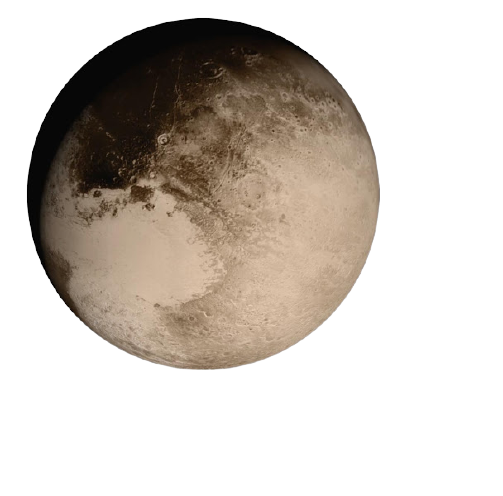

PLUTO
- Pluto is a dwarf planet located in the Kuiper belt. It was the first and the largest Kuiper belt object to be discovered.
- After Pluto was discovered in 1930 it was declared to be the ninth planet from the Sun. Beginning in the 1990s, its status as a planet was questioned following the discovery of several objects of similar size in the Kuiper belt, including the dwarf planet Eris. This led the International Astronomical Union (IAU) in 2006 to formally define the term "planet" — excluding Pluto and reclassifying it as a dwarf planet.
- Orbital period: 248 years
- Length of day: 6.4 Earth days (6 days 9 hours and 36 minutes)
- Radius of Pluto: 1188.3 km
- An interesting fact: The decision made in the year 2006 witnessed widespread outrage on behalf of Pluto. Along with the updates of the textbooks came the onslaught of several internet-spawned memes picturing Pluto going from angry to sad in a range of emotions.
